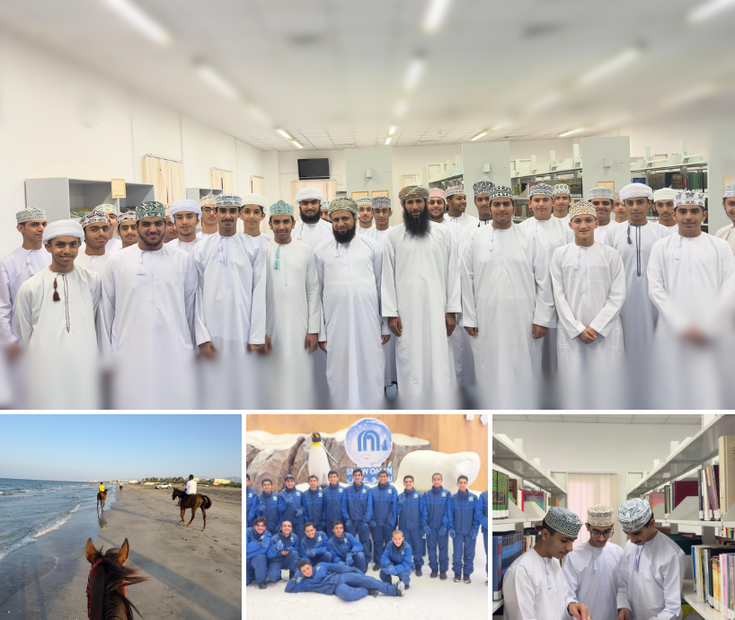

👤 زيارة الشيخ عبدالله المعمري ومحاضرة "طالب العلم"

من مواليد عام 1392هـ (الموافق 17 ديسمبر 1972). حصل على شهادة الإجازة العالية (بكالوريوس) من معهد القضاء الشرعي والوعظ والإرشاد عام 1414هـ (1994)، وتابع دراساته العليا في جامعة آل البيت بالأردن، ونال الماجستير في تخصص: القرآن وعلومه عام 1999.
خلال الزيارة، ألقى فضيلة الشيخ محاضرة بعنوان "طالب العلم"، تناول فيها أهمية طلب العلم الشرعي، وأخلاقيات المتعلم، ودور الشباب في بناء مجتمع واعٍ ومستنير.

🎒 رحلة طلاب الصف 11 إلى مسقط

شملت الرحلة زيارة معهد العلوم الإسلامية، والسكن في مسقط، وجامع السلطان قابوس الأكبر، ومول عمان وحديقة سنو عمان. كما استمتع الطلاب بالشاطئ وتجربة ركوب الخيل، ثم عادوا إلى سكن المعهد.